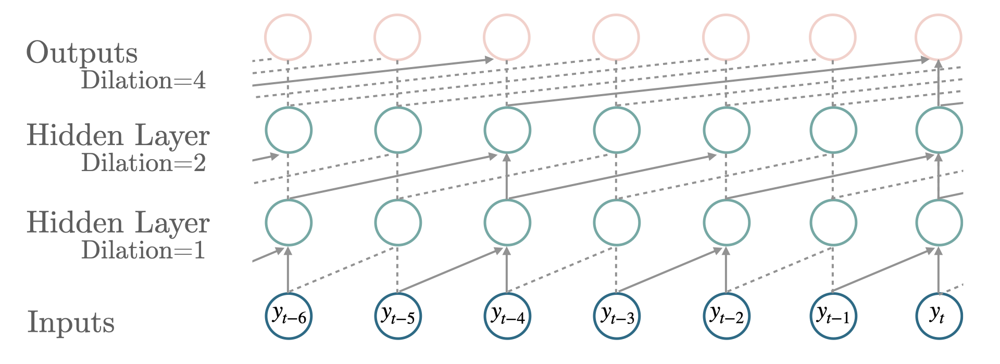

import numpy as np
import pandas as pd
import pytorch_lightning as pl
import matplotlib.pyplot as plt
from neuralforecast import NeuralForecast
from neuralforecast.losses.pytorch import MQLoss, DistributionLoss
from neuralforecast.utils import AirPassengersPanel, AirPassengersStatic
from neuralforecast.tsdataset import TimeSeriesDataset, TimeSeriesLoader
Y_train_df = AirPassengersPanel[AirPassengersPanel.ds<AirPassengersPanel['ds'].values[-12]] # 132 train
Y_test_df = AirPassengersPanel[AirPassengersPanel.ds>=AirPassengersPanel['ds'].values[-12]].reset_index(drop=True) # 12 test
fcst = NeuralForecast(
models=[TCN(h=12, input_size=-1,
#loss=MAE(),
#loss=MQLoss(level=[80, 90]),
loss=DistributionLoss(distribution='Normal', level=[80, 90]),
learning_rate=5e-4,
kernel_size=2,
dilations=[1,2,4,8,16],
encoder_hidden_size=128,
context_size=10,
decoder_hidden_size=128,
decoder_layers=2,
max_epochs=500,
#scaler_type='robust',
scaler_type=None,
futr_exog_list=['y_[lag12]'],
hist_exog_list=None,
stat_exog_list=['airline1'],
)
],
freq='M'
)
fcst.fit(df=Y_train_df, static_df=AirPassengersStatic)
forecasts = fcst.predict(futr_df=Y_test_df)TCN
For long time in deep learning, sequence modelling was synonymous with recurrent networks, yet several papers have shown that simple convolutional architectures can outperform canonical recurrent networks like LSTMs by demonstrating longer effective memory. By skipping temporal connections the causal convolution filters can be applied to larger time spans while remaining computationally efficient.
The predictions are obtained by transforming the hidden states into contexts \(\mathbf{c}_{[t+1:t+H]}\), that are decoded and adapted into \(\mathbf{\hat{y}}_{[t+1:t+H],[q]}\) through MLPs.
\[\begin{align} \mathbf{h}_{t} &= \textrm{TCN}([\mathbf{y}_{t},\mathbf{x}^{(h)}_{t},\mathbf{x}^{(s)}], \mathbf{h}_{t-1})\\ \mathbf{c}_{[t+1:t+H]}&=\textrm{Linear}([\mathbf{h}_{t}, \mathbf{x}^{(f)}_{[:t+H]}]) \\ \hat{y}_{\tau,[q]}&=\textrm{MLP}([\mathbf{c}_{\tau},\mathbf{x}^{(f)}_{\tau}]) \end{align}\]
where \(\mathbf{h}_{t}\), is the hidden state for time \(t\), \(\mathbf{y}_{t}\) is the input at time \(t\) and \(\mathbf{h}_{t-1}\) is the hidden state of the previous layer at \(t-1\), \(\mathbf{x}^{(s)}\) are static exogenous inputs, \(\mathbf{x}^{(h)}_{t}\) historic exogenous, \(\mathbf{x}^{(f)}_{[:t+H]}\) are future exogenous available at the time of the prediction.
References
-van den Oord, A., Dieleman, S., Zen, H., Simonyan, K., Vinyals, O., Graves, A., Kalchbrenner, N., Senior, A. W., & Kavukcuoglu, K. (2016). Wavenet: A generative model for raw audio. Computing Research Repository, abs/1609.03499. URL: http://arxiv.org/abs/1609.03499. arXiv:1609.03499.
-Shaojie Bai, Zico Kolter, Vladlen Koltun. (2018). An Empirical Evaluation of Generic Convolutional and Recurrent Networks for Sequence Modeling. Computing Research Repository, abs/1803.01271. URL: https://arxiv.org/abs/1803.01271.

TCN
TCN (h:int, input_size:int=-1, kernel_size:int=2, dilations:List[int]=[1, 2, 4, 8, 16], encoder_hidden_size:int=200, encoder_activation:str='ReLU', context_size:int=10, decoder_hidden_size:int=200, decoder_layers:int=2, futr_exog_list=None, hist_exog_list=None, stat_exog_list=None, loss=MAE(), learning_rate:float=0.001, batch_size=32, scaler_type:str='robust', random_seed=1, num_workers_loader=0, drop_last_loader=False, **trainer_kwargs)
TCN
Temporal Convolution Network (TCN), with MLP decoder. The historical encoder uses dilated skip connections to obtain efficient long memory, while the rest of the architecture allows for future exogenous alignment.
Parameters:
h: int, forecast horizon.
input_size: int, maximum sequence length for truncated train backpropagation. Default -1 uses all history.
kernel_size: int, size of the convolving kernel.
dilations: int list, ontrols the temporal spacing between the kernel points; also known as the à trous algorithm.
encoder_hidden_size: int=200, units for the TCN’s hidden state size.
encoder_activation: str=tanh, type of TCN activation from tanh or relu.
context_size: int=10, size of context vector for each timestamp on the forecasting window.
decoder_hidden_size: int=200, size of hidden layer for the MLP decoder.
decoder_layers: int=2, number of layers for the MLP decoder.
futr_exog_list: str list, future exogenous columns.
hist_exog_list: str list, historic exogenous columns.
stat_exog_list: str list, static exogenous columns.
loss: PyTorch module, instantiated train loss class from losses collection.
learning_rate: float=1e-3, initial optimization learning rate (0,1).
batch_size: int=32, number of differentseries in each batch.
scaler_type: str=‘robust’, type of scaler for temporal inputs normalization see temporal scalers.
random_seed: int=1, random_seed for pytorch initializer and numpy generators.
num_workers_loader: int=os.cpu_count(), workers to be used by TimeSeriesDataLoader.
drop_last_loader: bool=False, if True TimeSeriesDataLoader drops last non-full batch.
**trainer_kwargs: int, keyword trainer arguments inherited from PyTorch Lighning’s trainer.
TCN.fit
TCN.fit (dataset, val_size=0, test_size=0)
Fit.
The fit method, optimizes the neural network’s weights using the initialization parameters (learning_rate, batch_size, …) and the loss function as defined during the initialization. Within fit we use a PyTorch Lightning Trainer that inherits the initialization’s self.trainer_kwargs, to customize its inputs, see PL’s trainer arguments.
The method is designed to be compatible with SKLearn-like classes and in particular to be compatible with the StatsForecast library.
By default the model is not saving training checkpoints to protect disk memory, to get them change enable_checkpointing=True in __init__.
Parameters:
dataset: NeuralForecast’s TimeSeriesDataset, see documentation.
val_size: int, validation size for temporal cross-validation.
test_size: int, test size for temporal cross-validation.
TCN.predict
TCN.predict (dataset, step_size=1, **data_module_kwargs)
Predict.
Neural network prediction with PL’s Trainer execution of predict_step.
Parameters:
dataset: NeuralForecast’s TimeSeriesDataset, see documentation.
step_size: int=1, Step size between each window.
**data_module_kwargs: PL’s TimeSeriesDataModule args, see documentation.
Usage Example
# Plot quantile predictions
Y_hat_df = forecasts.reset_index(drop=False).drop(columns=['unique_id','ds'])
plot_df = pd.concat([Y_test_df, Y_hat_df], axis=1)
plot_df = pd.concat([Y_train_df, plot_df])
plot_df = plot_df[plot_df.unique_id=='Airline1'].drop('unique_id', axis=1)
plt.plot(plot_df['ds'], plot_df['y'], c='black', label='True')
try:
plt.plot(plot_df['ds'], plot_df['TCN-median'], c='blue', label='median')
plt.fill_between(x=plot_df['ds'],
y1=plot_df['TCN-lo-90.0'], y2=plot_df['TCN-hi-90.0'],
alpha=0.4, label='level 90')
except:
plt.plot(plot_df['ds'], plot_df['TCN'], c='blue', label='median')
plt.legend()
plt.grid()
plt.plot()